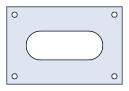
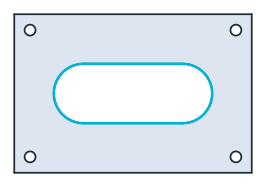
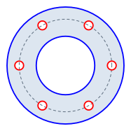
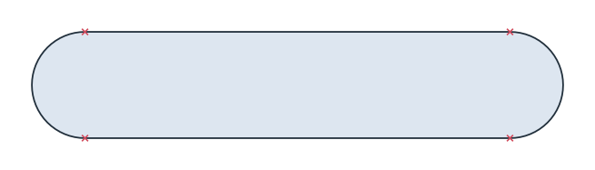

Files
planex2d reads and writes KiCad boards and gmsh .geo files itself, and the other formats go through a package of their own. Each section names the package it needs. A function whose package is missing says so when it is called, so planex2d itself installs without any of them.
Format |
Read |
Write |
Needs |
|---|---|---|---|
DXF |
|
|
|
STEP, BREP (IGES: read) |
|
|
OpenCASCADE through |
SVG |
|
Nothing |
|
shapely geometry |
|
|
|
KiCad boards |
|
|
Nothing for |
gmsh |
|
Nothing to write it; gmsh to mesh it |
[1]:
import math
import planex as px
DXF
DXF needs ezdxf (pip install ezdxf). The lines, arcs, circles, polylines with bulges, splines and ellipses of a CAD drawing become planex2d edges, and a full circle becomes one circle edge. The layer becomes the edge name, and the layer color becomes its col. FromDXF returns a list of wires, one per chain, and px.Face builds the face from them.
The example is a cover plate of 120 × 80 with a window slot of 50 × 30 and four screw holes of diameter 5.5, drawn in one sketch with its edges named. Written to DXF and read back, it keeps its geometry and its edge names, which travel as layers (Figure 1).
[3]:
import ezdxf
s = px.QuickSketch().RectangleC(120, 80, name="outline")
s.Move((-25, 0)).Slot(50, 30, name="window")
for x in (-52, 52):
for y in (-32, 32):
s.Circle(x, y, 2.75, name="screw hole")
face = s.Face()
face.WriteDXF("cover.dxf")
back = px.Face(px.FromDXF("cover.dxf"))
print("area difference", back.mass - face.mass)
print(sorted({e.name for e in back.edges}))
area difference 0.0
['outline', 'screw hole', 'window']

(a) Written

(b) Read back: the edges named window in cyan
A gasket drawing
The example is a gasket drawing made with ezdxf, as another CAD program would write it: an outer diameter of 120 and a bore of 60 on a blue layer, six holes of diameter 9 on a red one, and the bolt circle of diameter 95 on a green center line layer that is not part of the part.
[5]:
doc = ezdxf.new()
doc.layers.add("outline", color=5)
doc.layers.add("holes", color=1)
doc.layers.add("centerlines", color=3)
msp = doc.modelspace()
msp.add_circle((0, 0), 60, dxfattribs={"layer": "outline"})
msp.add_circle((0, 0), 30, dxfattribs={"layer": "outline"})
msp.add_circle((0, 0), 47.5, dxfattribs={"layer": "centerlines"})
for k in range(6):
a = 2 * math.pi * k / 6
msp.add_circle((47.5 * math.cos(a), 47.5 * math.sin(a)), 4.5, dxfattribs={"layer": "holes"})
doc.saveas("gasket.dxf")
layers reads only the outline and the holes. Each edge takes its layer’s color, and the bolt circle, which is left out, is shown dashed (Figure 2).
[6]:
gasket = px.Face(px.FromDXF("gasket.dxf", layers=["outline", "holes"]))
print(sorted({e.name for e in gasket.edges}))
['holes', 'outline']

[8]:
print("area", gasket.mass, "exact", math.pi / 4 * (120**2 - 60**2 - 6 * 9**2))
area 8100.596657281283 exact 8100.596657281281
Polylines with arcs
DXF draws arcs in polylines as bulges. The example is a slot of width 10 along a spine of 40, drawn as one closed polyline, where a bulge of 1 is a half circle (Figure 3).
[9]:
doc = ezdxf.new()
points = [(0, 0, 0), (40, 0, 1), (40, 10, 0), (0, 10, 1)]
doc.modelspace().add_lwpolyline(points, format="xyb", close=True)
doc.saveas("slot.dxf")
slot = px.Face(px.FromDXF("slot.dxf"))

[11]:
print("area", slot.mass, "exact", 40 * 10 + math.pi * 25)
area 478.53981633974485 exact 478.53981633974485
Units
planex2d has no unit of its own (see Units), and FromDXF returns meters. It reads the unit of the drawing from its header ($INSUNITS) and converts to meters. A drawing that names no unit is read as meters, with a warning, and unit sets the unit instead. The gasket above uses millimeters, but ezdxf writes meters into the header of a new drawing unless told otherwise:
[12]:
print(px.Compound(px.FromDXF("gasket.dxf", layers=["outline"], unit=px.mm)).bounding_box)
((-0.06, -0.06), (0.06, 0.06))
Gaps
Drawings often have ends that miss each other slightly. The example is a rectangle of 50 × 30 whose last line stops 10⁻⁵ short of its start, so it stays open. tol joins end points that are closer than the given value:
[13]:
doc = ezdxf.new()
msp = doc.modelspace()
corners = [(0, 0), (50, 0), (50, 30), (0, 30), (0, 1e-5)]
for a, b in zip(corners, corners[1:]):
msp.add_line(a, b)
doc.saveas("gap.dxf")
print([w.IsClosed() for w in px.FromDXF("gap.dxf")], [w.IsClosed() for w in px.FromDXF("gap.dxf", tol=1e-4)])
[False] [True]
STEP and BREP
STEP and BREP need OpenCASCADE through netgen.occ (pip install netgen-mesher, which brings OpenCASCADE as netgen-occt). WriteStep and WriteBrep write the export described in To OCC shapes, with its options. px.FromOCC reads a planar STEP, BREP or IGES file back as a planex2d shape, with its names.
[14]:
face.WriteStep("cover.step")
face.WriteBrep("cover.brep")
again = px.FromOCC("cover.step")
print("area", again.mass, "written", face.mass)
area 7298.108475171204 written 7298.108475171204
SVG
SVG needs no extra package. ToSVG returns the picture that a notebook shows as text, for a file or a web page. See SVG for details.
[15]:
with open("cover.svg", "w") as f:
f.write(face.ToSVG())
shapely
shapely geometry needs shapely. px.FromShapely turns polygons and line strings into faces and wires, and px.ToShapely converts the other way. See shapely for details.
KiCad
planex2d reads and writes .kicad_pcb boards itself. A board from another program, such as Altium or Eagle, is first converted by KiCad 10’s kicad-cli, which then has to be installed. See KiCad for details.
gmsh
WriteGeo writes a gmsh .geo file, with the names as physical groups, and gmsh is needed to mesh it. See gmsh and FEniCSx for details.